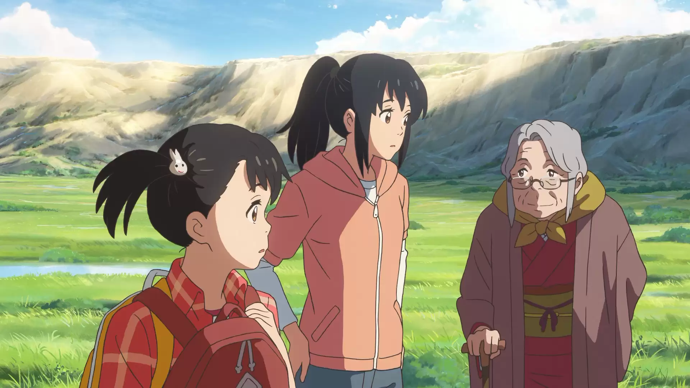
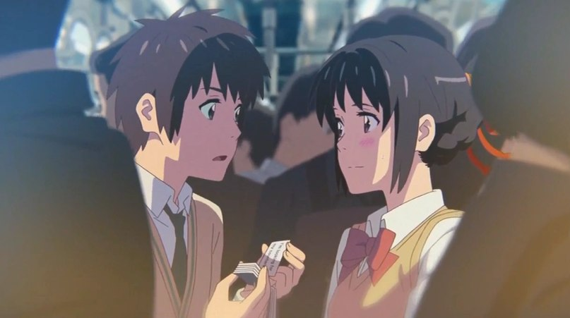
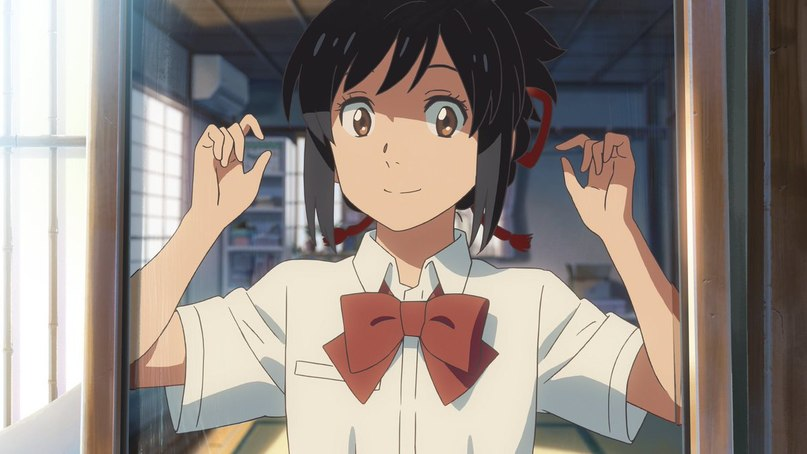
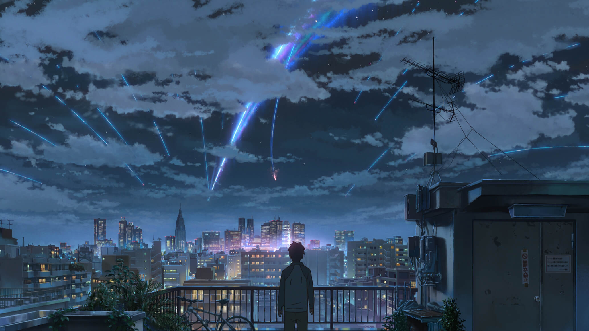

Your Name

Токийский парень Таки и провинциальная девушка Мицуха обнаруживают, что между ними существует странная связь. Во сне они меняются телами и проживают жизни друг друга. Но однажды эта способность исчезает так же внезапно, как появилась. Таки решает во что бы то ни стало отыскать Мицуху.
2016 | 13+| 1h 45m | Language: Japanese
⌄Gallery⌄





45m
55m
1h 5m
32m

Макото Синкай (яп. 新海 誠 Синкай Макото) — японский режиссёр и аниматор, родился в префектуре Нагано в 1973 году. Настоящее имя — Макото Ниицу (яп. 新津 誠 Ниицу Макото). Для фильмов Синкая характерны романтические истории с фантастическими или сказочными элементами, а также красочное и детальное изображение окружающего героев мира. Фильм Синкая «Твоё имя», вышедший в 2016 году, некоторое время был самым кассовым аниме в мире за всю историю.
It was almost likecseeing something out of a dream, nothing more
or less than a breathtaking view.